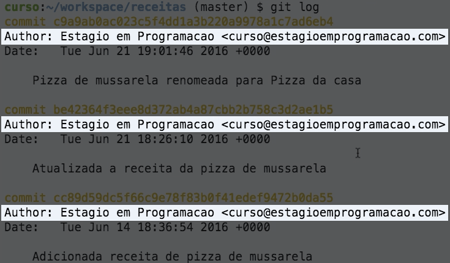

Quando um commit é criado, o nome e o email do autor do commit ficam associados a ele. Você deve ter percebido isso quando usamos o comando git log, como destacado na imagem abaixo:

O Git não tira essa informação da cartola. É necessário que o nome e o email do programador sejam configurados no ambiente para o que o Git registre corretamente essas informações nos commits. Essa configuração é feita com o comando git config.
É possível fazer dois tipos de configurações:
O comando git config pode receber dois argumentos: o nome de uma variável e o valor desejado para ela. Então, para alterar uma configuração global, use o comando:
git config --global <variavel> <valor_desejado>
E para alterar uma configuração específica do repositório, use o comando:
git config <variavel> <valor_desejado>
Importante: no caso de configuração específica, é necessário executar o comando dentro do diretório do repositório.
Abra o terminal do Cloud9.
Configure o nome de usuário global do Git como Global User Name. A variável que armazena o nome de usuário é user.name.
Configure o email de usuário global do Git como global_user@email.com. A variável que armazena o email do usuário é user.email.
Entre no diretório do repositório local (~/workspace/ep-exercicios/m2/ep-m2-repo).
Configure com o seu nome o nome do usuário específico do repositório. A variável que armazena o nome de usuário é user.name
Configure com o seu email o email do usuário específico do repositório. A variável que armazena o email do usuário é user.email.
Utilize a ferramenta de correção automática do ep-cli para verificar se está tudo certo.
ep-cli corrigir --dir ~/workspace/ep-exercicios/m2 --dicas 2.2
Quando você tiver finalizado o exercício, utilize a ferramenta ep-cli
para enviar o resultado.
ep-cli enviar 2.2